이 포스트에 대해
웹 에이전트 논문들을 읽다 보면 세 가지 층이 뒤섞인다. 어떻게 브라우저를 조작하는가(구현 레이어), 어떻게 평가하는가(벤치마크 레이어), 어떤 아키텍처가 좋은가(시스템 설계 레이어). 논문마다 자기 맥락에서만 설명하기 때문에 전체 그림이 잘 보이지 않는다.
이 포스트는 세 레이어를 순서대로 쌓는다.
Part 1 — 동작 방식: 브라우저와 LLM 사이
LLM의 결정을 물리적 클릭으로
LLM이 "검색 버튼을 클릭한다"는 결정을 내려도 실제 클릭이 일어나려면 뭔가가 브라우저를 직접 조작해야 한다. 웹 에이전트가 쓰는 도구는 Playwright 또는 Puppeteer 같은 브라우저 자동화 라이브러리다.
이 라이브러리들은 Chrome DevTools Protocol(CDP) 을 통해 Chrome 브라우저와 WebSocket으로 통신한다. CDP는 Chrome이 노출하는 저수준 API로, 마우스 이벤트 발송·DOM 조회·JavaScript 실행·스크린샷 캡처 등을 명령한다.
import asyncio
from playwright.async_api import async_playwright
async def run_agent_step():
async with async_playwright() as p:
browser = await p.chromium.launch(headless=True)
page = await browser.new_page()
await page.goto("https://example-shop.com")
# LLM 입력: Accessibility Tree 추출
ax_tree = await page.accessibility.snapshot()
# VLM 입력: 스크린샷 캡처
screenshot = await page.screenshot()
# LLM 결정 → 실행 (액션 타입별)
await page.click('[aria-label="Search"]') # click
await page.fill('#search-input', "red shoes") # type
await page.select_option('#size-select', "10") # select_option
await page.mouse.wheel(0, 500) # scroll
await page.hover(".nav-category") # hover
await page.keyboard.press("Enter") # key_press
await page.go_back() # go_back
에이전트 관점에서 액션 공간은 7~10개 기본 연산으로 구성된다: click, type, select, scroll, hover, goto, go_back, key_press, 그리고 태스크 완료를 선언하는 stop.
Observation: 에이전트는 뭘 보는가
브라우저에서 LLM으로 "현재 상태"를 전달하는 방법이 몇 가지 있다. 어떤 방법을 쓰느냐가 시스템 성능과 토큰 비용을 크게 좌우한다.
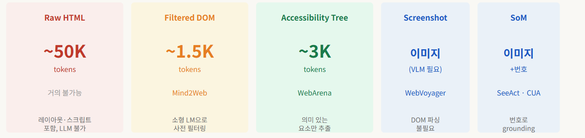
Raw HTML은 페이지를 그대로 담지만 수천 줄이 된다.
<!-- 수천 개 div 중 일부 -->
<div class="nav-search-wrapper">
<input id="twotabsearchtextbox"
type="text"
placeholder="Search Amazon"
aria-label="Search Amazon">
<input id="nav-search-submit-button"
type="submit" value="Go">
</div>
<!-- 이후 수천 줄 계속... -->
Filtered DOM은 Raw HTML에서 스크립트·스타일·숨겨진 요소 등 에이전트에게 불필요한 부분을 제거하고 인터랙티브 요소 중심으로 압축한 형태다. Raw HTML ~50K 토큰이 ~1.5K까지 줄어든다.
<!-- Filtered DOM 예시 — 핵심 인터랙티브 요소만 남김 -->
<input id="twotabsearchtextbox" type="text"
placeholder="Search Amazon" aria-label="Search Amazon">
<input id="nav-search-submit-button" type="submit" value="Go">
<a href="/deals">Today's Deals</a>
<a href="/gp/cart/view.html">Cart (3)</a>
HTML 태그와 속성이 유지되므로 에이전트가 XPath나 CSS 셀렉터로 직접 요소를 지정할 수 있다는 장점이 있다. 단, 페이지가 조금만 바뀌어도 셀렉터가 깨지는 취약점이 있고, AX Tree보다 여전히 노이즈가 많다.
Accessibility Tree는 브라우저가 스크린 리더를 위해 내부적으로 유지하는 구조다. 시각적 레이아웃 정보는 없지만 인터랙티브 요소와 역할은 정확히 담겨 있다.
{
"role": "WebArea",
"name": "Amazon.com",
"children": [
{ "role": "combobox", "name": "Search in", "value": "All" },
{ "role": "searchbox", "name": "Search Amazon", "value": "" },
{ "role": "button", "name": "Go" }
]
}
// ~80 토큰 (raw HTML은 ~800 토큰)
// 전체 페이지: AX tree ~3K vs HTML ~50K
스크린샷만 있으면 "어디를 클릭해야 하는가"를 VLM이 픽셀 좌표로 특정해야 한다. SoM은 스크린샷 위에 인터랙티브 요소마다 번호 레이블을 오버레이하고, LLM이 "3번을 클릭하라"처럼 번호로 참조하게 한다.
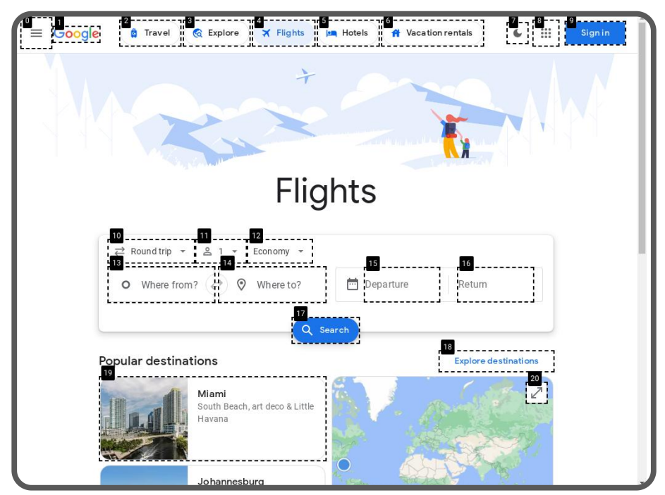
LLM과 VLM 입출력 실제 샘플
태스크: "WebArena 쇼핑몰에서 'Waffle Knit Beanie'를 검색하고 리뷰가 가장 많은 제품을 장바구니에 담아라."
텍스트 기반 (WebArena 스타일) — 시스템 프롬프트:
You are a web browsing agent. Output your next action:
Thought: [reasoning]
Action: [action_type] [arguments]
Available actions: click [id], type [id] [text],
scroll [dir], goto [url], go_back, stop [answer]
LLM 출력 (3턴):
Thought: 검색창 [6]이 보인다.
Action: type [6] Waffle Knit Beanie
------- 다음 턴 -------
Thought: 리뷰 수 확인:
[23] "2-Pack Waffle Knit Beanie" - ★4.3 (127 reviews)
[31] "Organic Waffle Beanie" - ★4.1 (43 reviews)
[38] "Fleece Waffle Beanie" - ★4.5 (89 reviews)
Product [23]이 127개로 가장 많다.
Action: click [23]
------- 다음 턴 -------
Thought: 상세 페이지. "Add to Cart" 버튼 발견.
Action: click [52]
Action: stop [Task completed]
텍스트 기반은 요소 ID([6])를 AX Tree에서 직접 가져와서 확실히 존재하는 요소를 참조한다. 비전 기반은 SoM 번호를 참조하는데, 이 번호는 JavaScript가 실시간으로 할당하므로 턴마다 달라질 수 있다.
End-to-End 추적: GitLab 이슈 태스크
태스크: "WebArena GitLab에서 'awesome-os' 프로젝트의 open 이슈 수를 알려라."
| 스텝 | 상태 | 관찰 (AX Tree) | 액션 |
|---|---|---|---|
| 0 | 초기화 | Docker GitLab 인스턴스 시작 | Playwright 브라우저 시작 |
| 1 | GitLab 홈 | [3] link "awesome-os" |
click [3] |
| 2 | 프로젝트 페이지 | [12] link "Issues (7)" |
click [12] |
| 3 | 이슈 목록 | [1] tab "Open (5)" [2] tab "Closed (2)" |
stop [5] |
| ✓ | 평가 | string_match(answer="5", reference="5") → Success |
|
이 4스텝 태스크는 단순한 편이다. 실제 WebArena 태스크들은 평균 10~15스텝, 어려운 것들은 30스텝을 넘는다.
Part 2 — 벤치마크 해부
벤치마크마다 근본적인 설계 철학이 다르다. 어느 숫자를 믿을 수 있는지 이해하려면 각 벤치마크가 무엇을 측정하는지 알아야 한다.
Mind2Web (NeurIPS 2023) — 오프라인 평가
Mind2Web은 Amazon Mechanical Turk를 통해 실제 사용자들이 웹을 탐색하는 과정을 녹화한 데이터셋이다. 137개 사이트, 2,350개 태스크, 태스크당 평균 7.3개 스텝이 저장된 HTML 스냅샷으로 존재한다. 실제 브라우저는 없다.
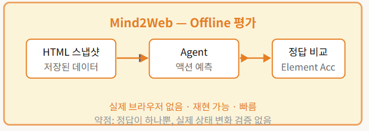
세 가지 일반화 시나리오 — 논문에서 "우리 모델이 X%"라고 보고할 때 어느 분할인지를 반드시 확인해야 한다.
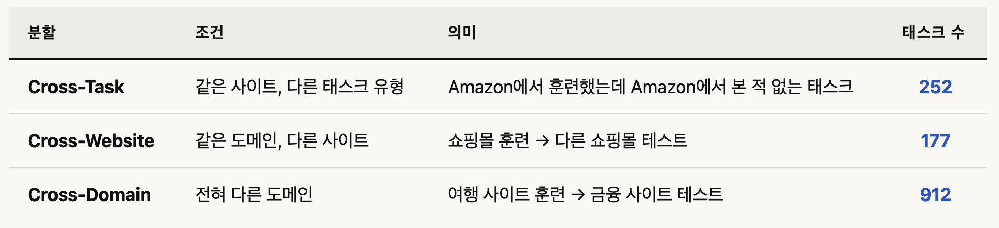
네 가지 지표 — 스텝 하나를 (요소, 액션, 값) 세 부분으로 분해해서 각 레벨에서 정확도를 측정한다.
| 지표 | 무엇을 보는가 | 통과 조건 |
|---|---|---|
| Element Accuracy | 올바른 DOM 요소를 골랐는가 | 요소만 맞으면 OK (액션·값 무관) |
| Operation F1 | 오퍼레이션(CLICK/TYPE/SELECT) + 값이 맞는가 | 요소는 맞았다고 가정하고 채점. F1으로 부분 점수 있음 |
| Step SR | 스텝 하나가 완전히 맞는가 | 요소 + 오퍼레이션 + 값 셋 다 맞아야 1점. 하나라도 틀리면 0점 |
| Task SR | 태스크 전체가 맞는가 | 모든 스텝의 Step SR = 1이어야 성공. 하나라도 틀리면 태스크 전체 실패 |
수식보다 예시로 보는 게 훨씬 빠르다.
예시 태스크: "우편번호 10002 근처 자동차 수리점 리뷰를 보여줘" — 10개 스텝 중 Step 3:
[textbox] Near → TYPE: 10002
| 에이전트 예측 | Ele. Acc | Op. F1 | Step SR | 이유 |
|---|---|---|---|---|
[textbox] Near → TYPE: 10002 |
✓ | ✓ | ✓ 1점 | 요소·오퍼레이션·값 전부 정답 |
[textbox] Near → TYPE: New York |
✓ | ✗ | ✗ 0점 | 요소는 맞지만 값이 틀림 — Step SR은 부분 점수 없음 |
[searchbox] Find → TYPE: 10002 |
✗ | ✗ | ✗ 0점 | 값은 맞지만 요소가 틀림 — Ele.Acc 실패 시 Op.F1도 0 |
[textbox] Near → CLICK |
✓ | ✗ | ✗ 0점 | 요소는 맞지만 오퍼레이션(CLICK ≠ TYPE)이 틀림 |
이 Step 3 하나만 봐도 지표 간 관계가 명확해진다: Ele. Acc는 요소만, Op. F1은 오퍼레이션+값만, Step SR은 셋 다 맞아야 1점. Task SR은 이 10개 스텝 전부가 Step SR = 1이어야 성공 — 하나라도 틀리면 0이다.
Step SR 50%라는 숫자만 보면 나쁘지 않아 보인다. 하지만 태스크당 평균 7.3스텝을 가정하면 Task SR ≈ 0.57.3 ≈ 0.6%. 실제 최고 성능도 Task SR 5~7%에 그치는 건 이 수학적 귀결이다. 두 숫자를 항상 같이 봐야 한다.
실제 벤치마크 결과:
| 모델 | 분할 | Ele. Acc | Op. F1 | Step SR | Task SR |
|---|---|---|---|---|---|
| GPT-3.5-turbo | Cross-Task | 20.3% | 56.6% | 17.4% | 0.8% |
| GPT-4 (in-context) | Cross-Task | 41.6% | 60.6% | 36.2% | 2.0% |
| MindAct (Flan-T5-B) | Cross-Task | 43.6% | 76.8% | 41.0% | 4.0% |
| MindAct (Flan-T5-L) | Cross-Task | 53.4% | 75.7% | 50.3% | 7.1% |
| MindAct (Flan-T5-XL) | Cross-Task | 55.1% | 75.7% | 52.0% | 5.2% |
| MindAct (Flan-T5-XL) | Cross-Website | 42.0% | 65.2% | 38.9% | 5.1% |
| MindAct (Flan-T5-XL) | Cross-Domain | 42.1% | 66.5% | 39.6% | 2.9% |
WebArena (ICLR 2024) — 기능적 검증
WebArena의 근본적 혁신은 "에이전트가 무엇을 클릭했는가"가 아니라 "환경이 올바른 상태에 도달했는가"를 묻는다는 점이다.
두 가지 평가 함수 — 어떤 태스크냐에 따라 r_info(정보 검색)와 r_prog(상태 변경) 중 하나로 평가한다.
r_info — 정보 검색 태스크: 에이전트가 stop [answer]로 텍스트 답변을 제출. 세 가지 매칭 방식 중 하나를 적용한다.
| 태스크 예시 | 정답 | 에이전트 답변 | 방식 | r_info |
|---|---|---|---|---|
| GitLab open 이슈 수 | "5" |
"5" |
exact_match | 1.0 |
| GitLab open 이슈 수 | "5" |
"7" |
exact_match | 0.0 |
| 열린 이슈 제목들 나열 | ["Fix login", "Add tests"] |
"이슈: Fix login, Add tests, Update docs" | must_include | 1.0 |
| 병원 이름 | "UPMC Mercy" | "Mercy Hospital (UPMC)" | fuzzy_match (GPT-4 심판) |
1.0 |
r_prog — 상태 변경 태스크: 에이전트가 어떤 경로를 걸었든 환경의 실제 상태를 직접 검증한다. DB 쿼리, GitLab API, DOM JavaScript 평가 등을 조합한다.
| 태스크 예시 | 검증 방법 | r_prog |
|---|---|---|
| "GitLab에서 'Fix login bug' 이슈 생성" | GitLab API → 해당 이슈 존재 여부 | 1.0 (존재) |
| "GitLab에서 'Fix login bug' 이슈 생성" | GitLab API → 이슈 없음 | 0.0 (없음) |
| "장바구니에 상품 1개 추가" | DOM: .cart-count textContent == "1" |
1.0 |
| "Reddit에 특정 댓글 게시" | DB 쿼리 → 최신 댓글 텍스트 일치 확인 | 1.0 |
에이전트가 어떤 경로로 목표를 달성했든 결과물이 DB에 존재하면 정답이다. Mind2Web에서 "정답 경로"만 인정하던 것과 근본적으로 다르다.
WebArena에는 수행 불가능한 태스크도 포함된다. 이때 에이전트는 stop [N/A]를 출력해야 한다. 동일 관찰에서 같은 액션을 3번 반복하거나, 파싱 불가능한 액션을 3번 연속 생성하면 태스크 실패 처리된다.
2년간 SOTA 변화:
| 에이전트 | 발표 | Task SR |
|---|---|---|
| GPT-4 (최초) | 2023.07 | 14.41% |
| SeeAct (GPT-4V + SoM) | 2024.01 | ~23% |
| GPT-4o (experience replay) | 2024.07 | ~36.7% |
| Claude Computer Use 3.5 | 2024.10 | ~49.0% |
| Claude Computer Use 3.7 | 2025.02 | ~56.3% |
| OpenAI Operator | 2025.01 | ~61.3% |
| 인간 (CS 대학원생 5명) | — | 78.24% |
WebVoyager (ACL 2024) — GPT-4V 심판 방식
WebVoyager는 실제 라이브 웹사이트에서 멀티모달 에이전트를 평가하는 첫 번째 벤치마크다. Google·Amazon·GitHub·Booking.com 등 15개 실제 사이트, 643개 태스크.
기존 평가 방식과의 차이:
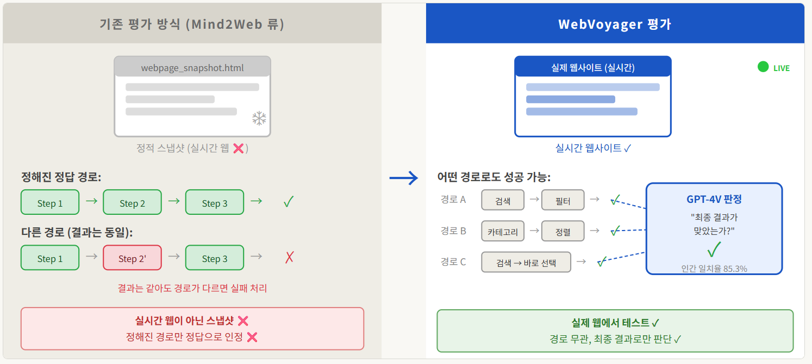
WebArena는 Docker 격리 환경에서 DB를 직접 검증한다. 하지만 실제 Amazon이나 GitHub에서는 그게 불가능하다. WebVoyager는 이 문제를 GPT-4V를 심판으로 써서 해결했다.
GPT-4V 심판에게 (1) 태스크 설명, (2) 에이전트의 최종 답변, (3) 궤적의 마지막 k장 스크린샷을 주고 "태스크가 완료됐는가?"를 Yes/No + 이유로 판정하도록 요청한다.
| 태스크 | 에이전트 답변 | GPT-4V 판정 | 판정 이유 |
|---|---|---|---|
| 뉴욕→파리 왕복 최저가 항공권 찾기 | "$487 Air France" | Yes | 스크린샷에 검색 결과 $487 Air France 항목이 보임 |
| 뉴욕→파리 왕복 최저가 항공권 찾기 | "검색 결과 없음" | No | 스크린샷에 실제 검색 결과가 표시되어 있음에도 에이전트가 실패로 보고 |
| GitHub 특정 이슈의 첫 댓글 내용 | "Fix the CI pipeline" | Yes | 스크린샷의 첫 댓글 텍스트와 일치 |
| Booking.com 2박 숙박 예약 확인 | "예약 완료 확인했습니다" | No | 마지막 스크린샷이 결제 페이지가 아닌 검색 결과 페이지 — 예약 완료 화면이 없음 |
k를 얼마로 설정하냐가 평가 신뢰도를 크게 좌우한다. 많은 후속 연구들이 비용 절감을 위해 마지막 1장만 쓰는데, 이 경우 κ = 0.51로 동전 뒤집기보다 약간 나은 수준이다.
| 제공 스크린샷 | 인간 일치율 | Cohen's κ | 실용성 |
|---|---|---|---|
| 마지막 1장만 | ~73% | 0.51 | 비용 저렴, 신뢰도 낮음 |
| 마지막 3장 | ~80% | 0.63 | 균형점 |
| 전체 궤적 | 85.3% | 0.70 | 비용 높음, 가장 신뢰 |
643개 태스크는 어떻게 만들었나 — 3단계 Self-Instruct
Stage 1 — 시드 태스크 수집: Google Flights, Google Maps, Google Search, Booking, Wolfram Alpha 5개 사이트에 Mind2Web 태스크를 샘플링하고 수동 편집해 시드 풀을 만든다.
Stage 2 — GPT-4 Turbo 생성 + 인간 검수: 시드 태스크를 in-context 예시로 주고 GPT-4 Turbo에게 사이트당 약 100개 태스크를 20회 반복 생성. 사람이 직접 검토·수정 후 Task Pool에 추가.
Stage 3 — 다양성 확보: Stage 2 풀에서 다양한 예시를 샘플링해 GPT-4 Turbo로 추가 생성. 직접 검증 후 추가 → 사이트당 40개 이상, 총 643개.
이 과정에서 "단순 검색 한 번으로 해결 가능한 태스크"가 많이 포함된 것이 "Illusion of Progress" 논문의 비판 대상이 됐다.
사이트별 텍스트 vs 멀티모달 비교:
| 사이트 | 텍스트 전용 | 멀티모달 | 차이 |
|---|---|---|---|
| Booking.com | 2.3% | 43.2% | +40.9%p |
| Google Flights | 41.5% | 70.7% | +29.2%p |
| Amazon | 36.6% | 58.5% | +21.9%p |
| BBC News | 52.4% | 61.9% | +9.5%p |
| Cambridge Dict. | 55.0% | 65.1% | +10.1%p |
| Google Search | 68.3% | 76.7% | +8.4%p |
| ArXiv | 48.8% | 51.2% | +2.4%p |
| 전체 평균 | 40.1% | 59.1% | +19.0%p |
Booking.com에서 텍스트 전용이 2.3%인 것이 눈에 띈다. 달력 UI와 가격 비교 레이아웃은 DOM만으로 파악하기 극히 어렵다. 반면 ArXiv(+2.4%p)나 Google Search(+8.4%p)처럼 텍스트 정보가 대부분인 사이트는 멀티모달의 이점이 거의 없다.
VisualWebArena (ACL 2024) — 시각 이해 없이는 못 푸는 태스크
WebArena 태스크들은 이론적으로 DOM/AX Tree만으로 전부 해결 가능하다. VisualWebArena는 이 한계를 직접 공략한다: 시각 이해 없이는 원천적으로 풀 수 없는 태스크.
태스크의 25.2%는 이미지를 태스크 설명에 직접 포함한다:
[이미지: 파란 스트라이프 셔츠 사진] "이 셔츠와 동일한 스타일인데 빨간색인 제품을 찾아서 장바구니에 담아라."
결과: 인간 88.70% vs 최고 모델(GPT-4o + SoM) 19.78%. WebArena(78% vs 14%)보다 격차가 더 크다. 이미지를 텍스트로 변환하는 Caption 방식은 12.75%에 그쳤다 — 텍스트 설명으로 요약하면 시각적 세부 정보가 손실된다.
"An Illusion of Progress? Assessing the Current State of Web Agents" (COLM 2025)
핵심 발견: Google에서 검색하고 첫 결과 페이지 정보를 답변으로 제출하는 단순한 에이전트가 WebVoyager 태스크의 **51%**를 통과한다. 즉 WebVoyager 태스크의 상당 부분은 실제 멀티스텝 웹 탐색이 필요 없다.
대안으로 제안된 Online-Mind2Web: 300개 태스크, 136개 사이트, 모든 태스크를 라이브 웹에서 인간이 직접 검증.
자동 평가도 개선했다. WebJudge:
# 1단계: 요구사항 추출
requirements = o4_mini.extract(task)
# → ["navigate to youtube.com", "search 'python tutorial'",
# "apply sort by view count", "identify top result"]
# 2단계: 관련 스크린샷만 필터링 (관련성 점수 δ=3 이상)
key_screenshots = [s for s in trajectory if relevance(s, req) > 3]
# 3단계: o4-mini 이진 판정
verdict = o4_mini.judge(task, requirements, key_screenshots, final_answer)
# → {"success": True/False, "reason": "..."}
제대로 측정하면 숫자가 어떻게 달라지나:
2024년 이후 에이전트들(Operator, Claude CU, Browser Use, Agent-E)은 원래 Mind2Web 오프라인 벤치마크로 평가된 기록이 없다. 각 에이전트가 자기 논문에서 선택한 벤치마크 점수와, 공통 기준인 Online-Mind2Web 점수를 나란히 놓은 것이다. 숫자 크기를 직접 비교하는 게 아니라 각자 얼마나 낙관적인 숫자를 골랐는가를 보는 표다.
| 에이전트 | 자체 선택 벤치마크 점수 | Online-Mind2Web (공통 엄격 기준) |
|---|---|---|
| OpenAI Operator | WebArena ~65% | 61.3% |
| Claude CU 3.7 | WebArena ~58% | 56.3% |
| Browser Use | 자체 벤치 ~80% | ~30% |
| Agent-E | WebVoyager ~73% | ~28% |
| SeeAct (2024 베이스라인) | WebVoyager 59% | ~26% |
Part 3 — 핵심 시스템 분석
Mind2Web + MindAct
핵심 문제: 페이지당 평균 1,135개 DOM 요소. LLM의 컨텍스트에 전부 집어넣으면 수만 토큰이다. 그렇다고 임의로 자르면 정답 요소가 잘릴 수 있다. Mind2Web 논문이 함께 제안한 에이전트 시스템 MindAct는 이 문제를 "필터링과 예측을 분리한다"는 아이디어로 해결한다.
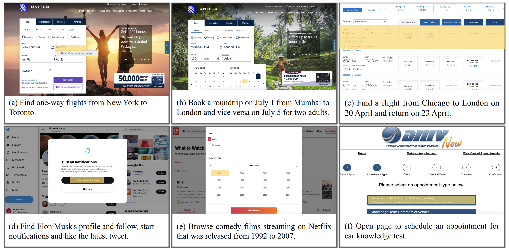
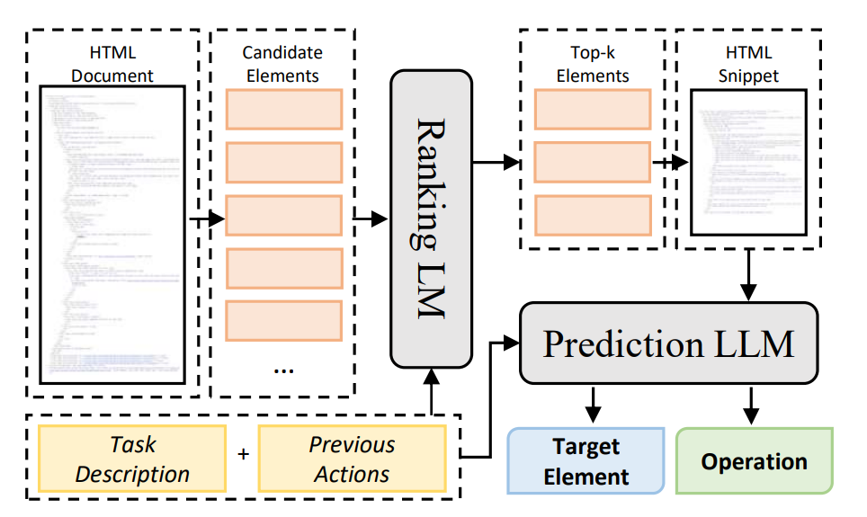
시스템 구성:
- 모델: DeBERTa-v3-base (Stage 1, Ranking LM) + Flan-T5-XL 또는 GPT-4 (Stage 2, Prediction LLM)
- 브라우저 자동화: 없음 — 오프라인 평가. 실제 브라우저 대신 저장된 DOM 스냅샷에서 작동
- 요소 식별: HTML 요소 후보 50개로 압축 후 객관식 선택
- 액션 공간:
CLICK,TYPE,SELECT(3가지 오퍼레이션) - 추론 방식: 2단계 파이프라인 — Ranking LM 필터링 → Prediction LLM 오퍼레이션 예측
MindAct의 2단계 파이프라인 — 두 가지 전문화된 모델이 역할을 나눈다.
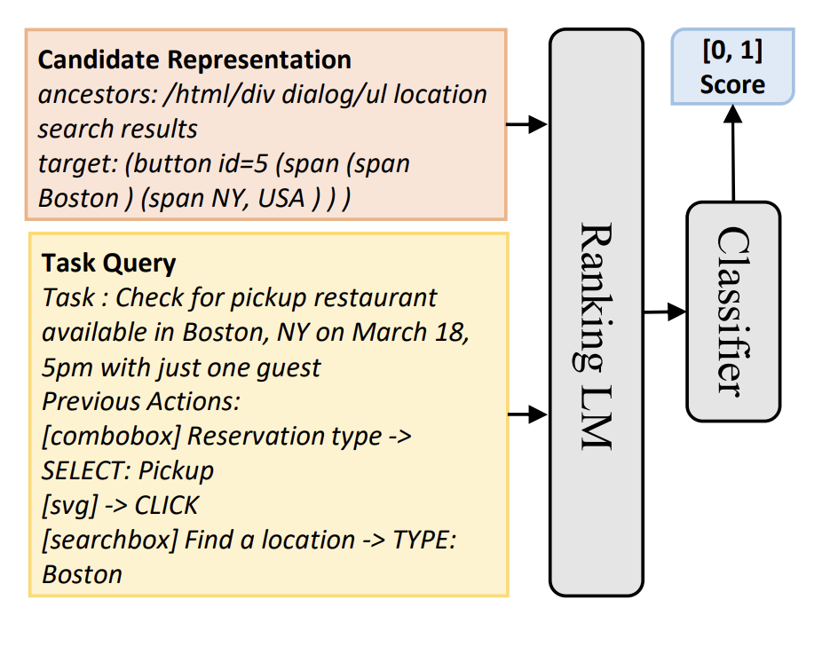
Stage 1 모델 — DeBERTa-v3-base: 86M 파라미터의 인코더 전용 모델. 왜 DeBERTa인가? Cross-encoder 구조로 학습시키면 태스크 설명과 DOM 요소를 하나의 시퀀스로 이어붙여 한번에 인코딩하므로, 둘 사이의 세밀한 상호작용을 직접 볼 수 있다. bi-encoder보다 느리지만 Stage 1의 목표는 정확도보다 재현율(Recall) — 정답 요소를 Top-50 안에 포함시키는 것 — 이므로 이 트레이드오프가 맞다. Binary cross-entropy + random negative sampling으로 파인튜닝한다.
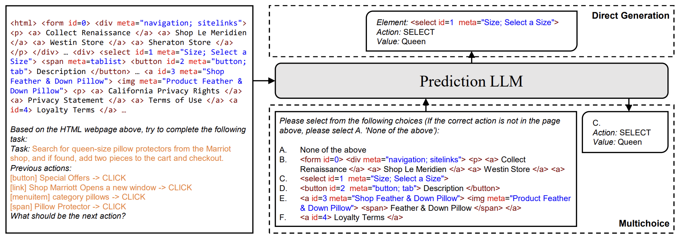
Stage 2 모델 — Flan-T5 또는 GPT-4: 50개 후보를 객관식 QA 형태로 변환해 LLM에 제시한다. "다음 중 클릭할 요소를 고르시오: (A) [button] Search (B) [input] Query ..." 형식이다. 논문은 Flan-T5-B/L/XL을 파인튜닝한 버전과 GPT-3.5/GPT-4 in-context 버전을 비교했다.
왜 생성이 아니라 판별인가? 생성 방식은 모델이 정답 요소의 XPath나 CSS 셀렉터를 직접 만들어야 하는데, 이는 사이트마다 다른 구조를 외우는 것에 가깝다. 판별 방식은 "이 요소가 이 태스크에 맞는가?"를 묻는 것으로, 사이트별 외형 지식이 아닌 태스크-요소 의미 매칭 능력을 학습한다.
5가지 핵심 발견:
발견 1 — 일반화 갭은 10%p 이상. Cross-Task 52.0% → Cross-Website 38.9%. 웹사이트별 레이아웃이 모두 다르기 때문이다.
발견 2 — Cross-Website ≈ Cross-Domain. 도메인 지식보다 UI 패턴 다양성이 더 큰 장벽이다. 여행 vs 쇼핑 도메인 차이보다, 에어비앤비 vs 익스피디아 UI 차이가 더 크다. "도메인 특화 에이전트"보다 "다양한 UI 패턴에 강인한 에이전트"가 더 중요하다.
발견 3 — Task SR이 낮은 건 수학적으로 당연. Step SR 52%, 평균 7.3스텝 → 0.52^7 ≈ 0.9%. 실제 5.2%는 스텝들이 컨텍스트를 공유해서 이보다 높다.
발견 4 — 파인튜닝이 필수. 제로샷 Flan-T5-XL은 Element Accuracy 10.8%. 파인튜닝 후 52.0%. 대형 모델도 이 태스크에선 파인튜닝이 필수다.
발견 5 — GPT-4가 의외로 강하다. 파인튜닝 없이 in-context learning만으로 Element Accuracy 41.6%. GPT-3.5-turbo(20.3%)와 비교하면 압도적이다.
발견 6 — 스케일이 일관되게 도움이 된다. Flan-T5-B(Step SR 41.0%) → L(50.3%) → XL(52.0%). 파라미터가 클수록 성능이 오른다. 흥미로운 점: GPT-4(Step SR 36.2%)가 파인튜닝된 Flan-T5-XL(52.0%)을 밑돈다. 이 태스크에서는 모델 크기보다 파인튜닝이 더 중요하다.
전체 실험 결과 테이블 (모든 모델 × 분할)
| 모델 | 분할 | Ele. Acc | Op. F1 | Step SR | Task SR |
|---|---|---|---|---|---|
| DeBERTa (분류 전용) | Cross-Task | 26.8% | — | — | — |
| Flan-T5-B (생성, 파인튜닝 없음) | Cross-Task | 20.2% | 52.0% | 17.5% | 0.0% |
| GPT-3.5-turbo | Cross-Task | 20.3% | 56.6% | 17.4% | 0.8% |
| MindAct (Flan-T5-B) | Cross-Task | 43.6% | 76.8% | 41.0% | 4.0% |
| MindAct (Flan-T5-L) | Cross-Task | 53.4% | 75.7% | 50.3% | 7.1% |
| MindAct (Flan-T5-XL) | Cross-Task | 55.1% | 75.7% | 52.0% | 5.2% |
| MindAct (Flan-T5-XL) | Cross-Website | 42.0% | 65.2% | 38.9% | 5.1% |
| MindAct (Flan-T5-XL) | Cross-Domain | 42.1% | 66.5% | 39.6% | 2.9% |
| GPT-4 (50 tasks, in-context) | Cross-Task | 41.6% | 60.6% | 36.2% | 2.0% |
| GPT-4 (50 tasks, in-context) | Cross-Domain | 37.1% | 46.5% | 26.4% | 2.0% |
데이터 수집 파이프라인 — 3단계
Stage 1 — Task Proposal: Amazon Mechanical Turk 작업자들이 태스크를 제안한다. 완전한 백지 상태가 아니라, ChatGPT로 생성한 시드 태스크 50개를 참고한다. 핵심 원칙: "diverse types, require multiple rounds of interaction, and describe the high-level goal instead of step-by-step instructions."
Stage 2 — Task Demonstration: Playwright 기반 커스텀 툴로 실제 브라우저에서 액션 시퀀스를 녹화한다. 작업자는 DOM 요소를 선택한 뒤 세 가지 오퍼레이션(CLICK / TYPE / SELECT) 중 하나를 고른다. 각 액션 시점의 스냅샷은 MHTML(raw HTML), DOM snapshot(레이아웃 포함), HAR(네트워크 트래픽), trace(재현용) 네 가지 포맷으로 저장된다.
Stage 3 — Verification: 저자들이 직접 리뷰. 전체 2,411개 중 61개 거절, 390개 태스크 설명 수정. 최종 2,350개.
WebVoyager 시스템
핵심 문제: GPT-4V는 스크린샷을 볼 수 있지만, "이 스크린샷에서 어떤 요소를 클릭하라"는 명령을 실행하려면 픽셀 좌표나 요소 식별자가 필요하다. 기존 텍스트 에이전트는 AX Tree ID로 요소를 참조하지만, 비전 모델은 스크린샷만 보고 그 ID를 알 수 없다. WebVoyager는 Set-of-Mark 방식으로 이 간격을 메운다.
시스템 구성:
- 모델: GPT-4V (GPT-4 with vision capability)
- 브라우저 자동화: Selenium
- 관찰 방식: 스크린샷 + SoM 번호 레이블 (JavaScript로 인터랙티브 요소 감지 후 번호 오버레이)
- 액션 공간:
Click,Type,Scroll,Wait,GoBack,Google,ANSWER(7가지) - 추론 형식: ReAct — Thought(추론) 다음 Action(행동), 최대 15스텝
GPT-4V-ACT라고 부르는 SoM 구현은 JavaScript 기반이다. 별도의 object detection 모델 없이 브라우저 내 JS 규칙으로 인터랙티브 요소를 감지하므로 가볍다. 각 요소에서 추출하는 정보는 네 가지: 번호 레이블, 텍스트 콘텐츠, 요소 타입, aria-label.
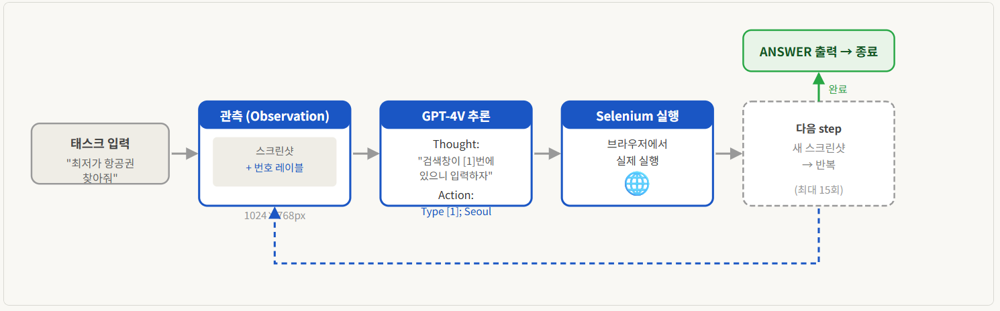
Context Clipping — 왜 3장인가: 15스텝을 돌면 스크린샷 15장이 쌓여 7,000+ 토큰이 된다. 전부 유지하면 GPT-4V 컨텍스트 한도에 금방 닿고 비용도 폭발한다. 논문에서 실험한 결과, 최근 3장의 스크린샷으로도 현재 상태를 파악하기에 충분했다. 반면 텍스트 히스토리(Thought+Action)는 장기 의존성이 있으므로 15개 전부 유지한다. 이미지는 자르고 텍스트는 유지하는 비대칭 전략이다.
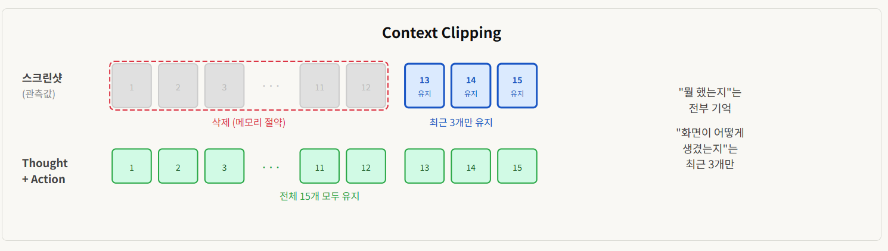
텍스트 전용과 멀티모달의 결정적 차이:
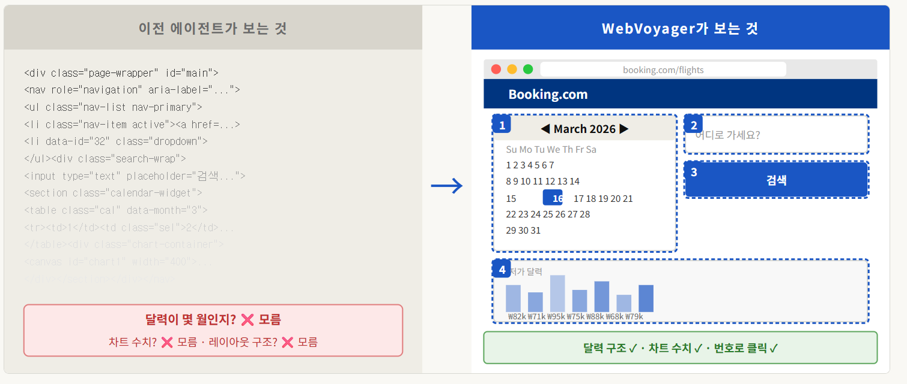
실패 300개 분류:
- 44.4% — Navigation Stuck: 길을 잃고 같은 행동 반복
- 24.8% — Visual Grounding 오류: 발음 기호 못 읽기, 달력 숫자와 SoM 번호 혼동
- 21.8% — Hallucination: 태스크 일부 누락, 엉뚱한 입력창에 입력
- 9.0% — Prompt Misalignment: Thought만 출력하거나 미완성인데 ANSWER 조기 종료
Q&A — WebVoyager 동작 방식, 더 깊이
Q. Selenium이 정확히 뭔가요? Playwright랑 어떻게 다른가요?
Selenium은 브라우저 자동화 라이브러리다. 코드로 실제 Chrome을 띄우고, 클릭·입력·스크롤 같은 동작을 프로그래밍으로 실행할 수 있다.
from selenium import webdriver
from selenium.webdriver.common.by import By
driver = webdriver.Chrome()
driver.get("https://google.com")
driver.find_element(By.NAME, "q").send_keys("WebVoyager")
driver.find_element(By.NAME, "btnK").click()
WebVoyager에서 Selenium의 역할은 단순하다. GPT-4V가 "7번 요소를 클릭해"라고 결정하면, Selenium이 그 요소를 찾아 실제로 클릭한다. LLM이 두뇌, Selenium이 손발이다.
Agent-E가 Playwright를 선택한 이유는 async/await 기반의 더 안정적인 API 때문이다. Selenium은 동기식이라 복잡한 AJAX 페이지에서 타이밍 문제가 생기기 쉽다.
Q. 관찰(Observation)에 텍스트는 안 들어가나요?
현재 페이지 상태는 스크린샷만 넘긴다. HTML도, AX Tree도 포함하지 않는다. 그래서 GPT-4V(멀티모달 모델)를 쓴 거다 — 텍스트 없이 이미지만 보고 현재 상태를 판단해야 하니까.
단, GPT-4V 입력은 현재 스크린샷만이 아니다. 이전 스텝들의 Thought+Action 텍스트 히스토리도 함께 넘긴다. 즉 "현재 화면은 이미지, 과거 행동 기록은 텍스트"라는 혼합 구조다. Context Clipping 전략도 이 구조에서 나온다 — 이미지(스크린샷)는 최근 3장만, 텍스트(Thought+Action)는 전체 15개 유지.
다만 SoM 레이블을 붙일 때 각 요소의 텍스트 콘텐츠·타입·aria-label을 JavaScript로 추출하긴 하지만, 이걸 텍스트 문자열로 LLM에 넘기는 게 아니라 이미지 위에 번호를 시각적으로 오버레이하는 데만 사용한다.
텍스트 에이전트(AX Tree 방식)와 비교하면:
| 텍스트 에이전트 (Agent-E 등) | WebVoyager | |
|---|---|---|
| 관찰 입력 | AX Tree (텍스트) | 스크린샷 (이미지) |
| 요소 참조 방식 | [6] — AX Tree에서 추출한 ID |
7번 — SoM 오버레이 번호 |
| 요소 ID 안정성 | 높음 (항상 동일) | 낮음 (턴마다 달라질 수 있음) |
| 달력·차트 이해 | 불가 | 가능 |
Q. 스크린샷 + SoM 번호 레이블, 정확히 어떻게 동작하나요?
SoM(Set-of-Mark) 파이프라인은 5단계다:
1. Selenium으로 현재 페이지 스크린샷 캡처
2. JavaScript로 클릭 가능한 요소(버튼·링크·입력창) DOM에서 추출
3. 각 요소 위에 빨간 번호 박스를 이미지에 직접 그림 (PIL/Pillow)
4. 번호 붙은 스크린샷을 GPT-4V에게 넘김
5. GPT-4V가 "7번 클릭" → Selenium이 7번 요소 실행
시각적으로 이런 구조다:
┌─────────────────────────────────────┐
│ Google [1] 검색창 │
│ │
│ [2] 뉴스 [3] 이미지 [4] 지도 │
│ │
│ [5] Google 검색 │
└─────────────────────────────────────┘
GPT-4V의 출력 예시:
Thought: 검색창에 "WebVoyager"를 입력해야 한다.
검색창은 1번 요소다.
Action: Type [1]; WebVoyager
SoM 번호는 JavaScript가 턴마다 실시간으로 할당하므로 페이지가 바뀌면 번호도 바뀐다. 그래서 "달력 숫자와 SoM 번호 혼동"이 실패 원인 2위(24.8%)를 차지한다 — 달력에 "15"가 있고 SoM 번호도 "15"이면 GPT-4V가 둘을 착각한다.
Agent-E — 계층적 분리와 DOM 디노이징
Agent-E는 텍스트만 본다. 스크린샷을 안 쓴다. 사이트별 특화 프롬프트도 없다. 그런데 WebVoyager 벤치마크에서 **73.2%**를 기록했다 — 멀티모달 WebVoyager(57.1%)보다 16%p 높다.
핵심 문제: 단일 에이전트 루프는 장기 태스크에서 두 가지 이유로 무너진다. 첫째, 히스토리가 길어질수록 컨텍스트에 노이즈가 쌓여 앞서 완료한 서브태스크 정보가 현재 결정을 간섭한다. 둘째, 에이전트가 "전체 진행 상황"과 "현재 페이지 조작"을 동시에 추적해야 해서 인지 부하가 크다. Agent-E는 이 두 책임을 명확히 분리한다.
시스템 구성:
- 프레임워크: Microsoft AutoGen (multi-agent orchestration)
- 모델: GPT-4 Turbo — Planner Agent와 Browser Navigation Agent 모두에 사용
- 브라우저 자동화: Playwright (Selenium 대비 더 안정적인 async API)
- 요소 식별: mmid (mind map identifier) — JavaScript로 각 DOM 요소에 커스텀 attribute 주입. XPath/CSS 셀렉터보다 페이지 변화에 강인하다
- 액션 공간 (Skills Library):
get_page_dom(),click(mmid),enter_text(mmid, text),open_url(url),press_key(key)(5가지 Python 함수)
두 에이전트의 분업:
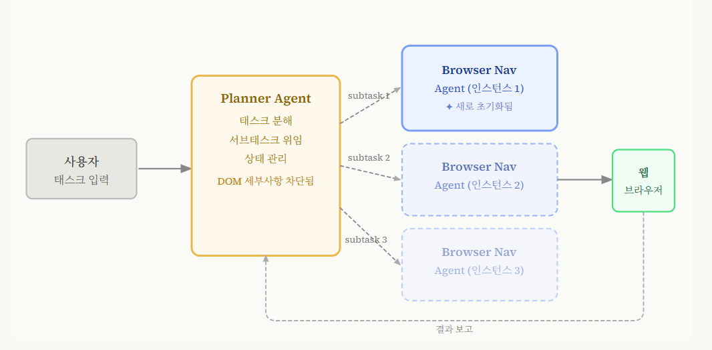
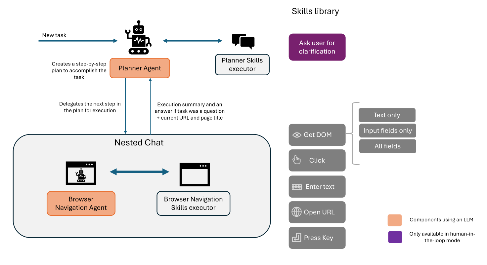
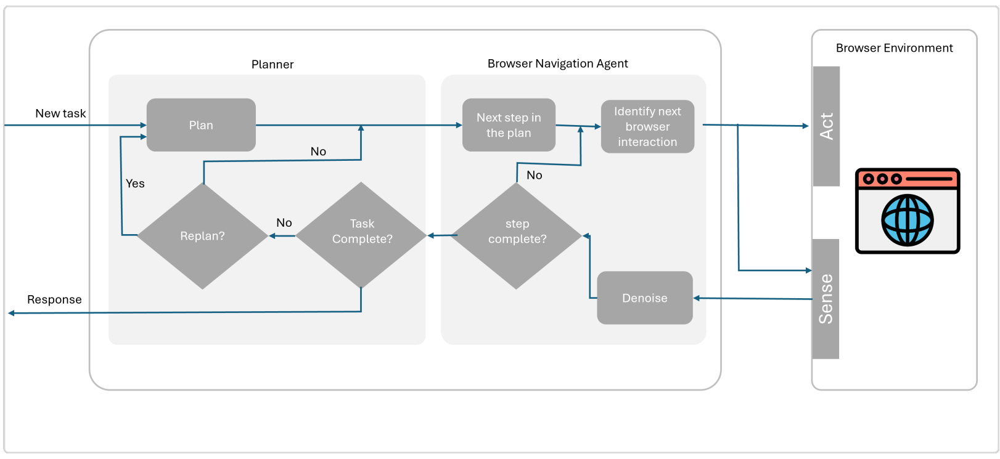
세 가지 DOM 표현 (페이로드 디노이징):
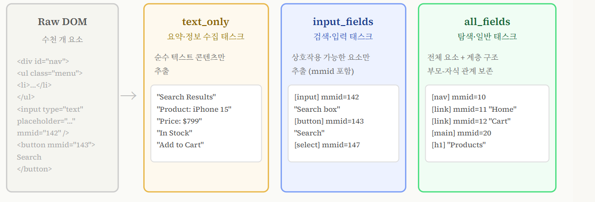
text_only— 정보 수집 태스크. UI 요소 제거, 텍스트만.input_fields— 검색·폼 입력.<input>,<button>,<select>만 +mmid식별자 부여. XPath나 CSS 셀렉터보다 안정적이다.all_fields— 탐색. 전체 요소 + 부모-자식 계층 구조 보존. 경쟁 에이전트들이 평면적(flat) 인코딩을 쓰는 것과 달리, 계층을 유지하면 "이 버튼이 어떤 섹션 안에 있는지"를 LLM이 파악할 수 있다.
왜 태스크 유형마다 다른 DOM 표현인가? 정보 수집 태스크에서 all_fields를 쓰면 버튼과 입력창 노이즈로 정작 읽어야 할 텍스트가 묻힌다. 폼 입력 태스크에서 text_only를 쓰면 클릭할 요소가 없다. 태스크의 의도에 맞게 DOM 표현을 선택하는 것 자체가 하나의 스킬이다.
언어적 행동 피드백 — 왜 필요한가:
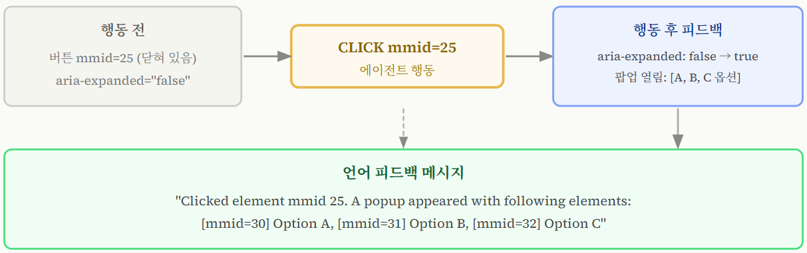
일반적인 에이전트는 클릭 후 다음 스텝에서 DOM을 다시 가져와야 결과를 안다. 이 사이클에서 "클릭이 드롭다운을 열었는지, 페이지를 이동시켰는지, 아무것도 안 했는지"를 구분하려면 이전 DOM과 비교 분석이 필요하다. Agent-E는 Mutation Observer Web API — 브라우저 내장 DOM 변화 감지 API — 를 사용해 클릭 직후 즉각적인 피드백을 언어로 생성한다. Reflexion처럼 실패 후 회고하는 방식이 아니라, 성공·실패와 무관하게 매 행동마다 작동한다.
"Clicked element mmid 25. A popup appeared with following elements: [mmid=30] Option A, [mmid=31] Option B, [mmid=32] Option C"
사이트별 성능 — 텍스트 전용의 강점과 한계:
| 사이트 | 성공률 | 이유 |
|---|---|---|
| WolframAlpha | 95.7% | 구조적이고 예측 가능한 인터페이스 — DOM으로 충분 |
| Google Search | 90.7% | 단순하고 일관된 UI |
| GitHub | 82.9% | 텍스트 중심, DOM 구조 명확 |
| ESPN | 77.3% | |
| Apple | 74.4% | |
| Allrecipes | 71.1% | |
| Amazon | 70.7% | |
| Booking.com | 27.3% | 달력 UI — 월 이동 버튼 반복 클릭·동적 가격 갱신 |
Booking.com 27.3%가 명확히 보여준다: 텍스트 에이전트의 천장은 달력·날짜 선택기 같은 다단계 시각적 인터랙션이다. 클릭 한 번에 달력이 열리고, 월 이동 버튼을 여러 번 눌러야 원하는 날짜에 도달하는 플로우는 DOM 텍스트만으론 파악이 어렵다. 반면 WolframAlpha/Google Search처럼 쿼리-결과 구조가 명확한 사이트에서는 스크린샷 없이도 압도적이다.
논문에서 도출한 네 가지 보편 원칙: 도메인 특화 기본 스킬 → 계층적 아키텍처 → 페이로드 디노이징 → 언어적 행동 피드백.
Q&A — 네 가지 보편 원칙, 구체적으로 뭘 한 건가요?
① 도메인 특화 기본 스킬 — "웹 조작 전용 함수 세트를 미리 만든다"
LLM에게 "이 버튼을 클릭해"라고 시키는 방법은 두 가지다. 하나는 "JavaScript나 XPath를 직접 작성해서 실행해"라고 하는 것, 다른 하나는 이미 만들어 둔 click(mmid=25) 함수를 호출하게 하는 것이다. Agent-E는 후자를 택했다.
Skills Library — Agent-E가 미리 만들어 둔 다섯 가지 웹 전용 함수:
# LLM이 직접 생성하는 게 아니라, 미리 만들어 둔 함수를 호출
get_dom_with_content_type(content_type="input_fields") # DOM 추출
click(mmid=25) # 클릭
enter_text(mmid=12, text="서울") # 텍스트 입력
open_url(url="https://booking.com") # URL 이동
press_key(key="Enter") # 키 입력
왜 "도메인 특화"인가? 이 함수들은 웹 브라우저 조작에만 쓸 수 있도록 설계됐다. 일반 Python 코드 실행이나 파일 시스템 접근 같은 건 없다. 범용 코드 실행을 허용하면 LLM이 엉뚱한 코드를 작성할 여지가 생기지만, 이렇게 기본 스킬을 한정하면 행동 공간이 명확히 좁아진다.
mmid(mind map identifier) 가 핵심이다. 페이지를 로드할 때 JavaScript를 주입해서 모든 DOM 요소에 mmid=1, mmid=2... 숫자를 붙인다. LLM은 XPath(/html/body/div[3]/button[2])나 CSS 셀렉터(.nav > .btn-primary) 같은 취약한 식별자 대신 mmid=25로만 참조한다. 사이트 구조가 바뀌어도 mmid는 해당 요소에 그대로 붙어 있으므로 훨씬 안정적이다.
② 계층적 아키텍처 — "계획하는 뇌와 실행하는 손을 분리한다"
단일 루프 에이전트는 "지금 어느 단계까지 왔는지"와 "지금 이 버튼을 눌러야 하는지"를 동시에 추적한다. 히스토리가 길어질수록 두 관심사가 뒤섞여 성능이 떨어진다. Agent-E는 이 두 역할을 아예 다른 에이전트에 맡긴다.
- Planner Agent: "항공권 예약" 태스크를 받아
[출발지 입력 → 도착지 입력 → 날짜 선택 → 검색 → 최저가 선택 → 결제]서브태스크 목록으로 분해. 현재 어느 서브태스크가 완료됐는지 추적. - Browser Navigation Agent: Planner에게 "출발지 입력"이라는 서브태스크 하나를 받아서 실행. 완료하면 다음 서브태스크를 다시 받음. 서브태스크마다 컨텍스트를 초기화하므로 이전 서브태스크 노이즈가 간섭하지 않는다.
③ 페이로드 디노이징 — "태스크 유형에 맞는 DOM만 잘라서 넘긴다"
Amazon 상품 페이지의 전체 DOM은 10,000개 이상의 요소로 이루어져 있다. 이걸 전부 LLM에 넘기면 정작 필요한 정보가 노이즈에 묻힌다. Agent-E는 태스크 유형에 따라 DOM을 세 가지로 잘라서 넘긴다:
| 태스크 유형 | DOM 모드 | 포함 내용 |
|---|---|---|
| 정보 읽기 ("가격이 얼마야?") | text_only |
텍스트만, 버튼·입력창 제거 |
| 폼 입력 ("서울 입력해") | input_fields |
<input> <button> <select> + mmid |
| 페이지 탐색·일반 | all_fields |
전체 요소 + 계층 구조 보존 |
"노이즈를 줄인다"는 뜻이 여기서 나온다 — 필요 없는 DOM 요소를 애초에 LLM 입력에서 제거한다.
④ 언어적 행동 피드백 — "클릭 직후 뭐가 바뀌었는지 말로 알려준다"
일반 에이전트는 클릭 후 다음 스텝에서 DOM을 다시 가져와서야 결과를 안다. Agent-E는 브라우저 내장 Mutation Observer API를 사용해 클릭 직후 즉각적으로 DOM 변화를 감지하고, 이를 자연어로 변환해 LLM에 돌려준다.
액션: CLICK mmid=25
피드백: "Clicked element mmid 25. A popup appeared with following elements:
[mmid=30] Option A, [mmid=31] Option B, [mmid=32] Option C"
실패해도 알려준다:
액션: CLICK mmid=42
피드백: "Clicked element mmid 42. No visible DOM changes detected."
이게 없으면 LLM은 "클릭했으니 뭔가 됐겠지"라고 가정하고 다음 단계로 넘어간다. 실제로는 아무것도 안 바뀌었는데도. 행동 직후 피드백을 받으면 LLM이 같은 자리에서 즉시 수정할 수 있다.
Browser Use — 단일 루프, 오픈소스 SOTA
"Make websites accessible for AI agents."
핵심 문제: 기존 웹 자동화 도구(Selenium, Playwright 스크립트)는 경직된 CSS 셀렉터에 의존한다. 사이트가 조금만 바뀌면 깨진다. LLM이 XPath를 직접 생성하게 해도 hallucination이 잦다. Browser Use는 다른 접근을 택했다 — DOM을 LLM이 이해할 수 있는 형태로 정규화하고, LLM이 숫자 인덱스로만 요소를 참조하게 한다.
시스템 구성:
- 모델 독립적: GPT-4o, Claude 3.5, Gemini, Mistral 등 어떤 LLM이든 백엔드로 사용 가능 (LangChain 통합)
- 브라우저 자동화: Playwright (CDP 기반)
- 요소 식별: 숫자 인덱스 — 스텝마다 재할당. XPath/CSS 셀렉터 hallucination 원천 차단
- 아키텍처: 단일 에이전트 루프 (Agent-E와 달리 플래너 없음). 계층 구조의 오버헤드 없이
memory필드로 인라인 플래닝 - 액션 공간:
click_element_by_index,input_text,scroll_down/scroll_up,go_to_url,go_back,search_google,extract_content,open_tab/close_tab/switch_tab,done(총 17가지 빌트인 + 커스텀 확장 가능)
Agent-E의 계층 구조와 달리 단일 에이전트 루프다. 하나의 Agent가 모든 결정과 실행을 담당한다. 복잡한 태스크의 계획은 LLM 출력의 memory 필드에 메모를 남기는 방식으로 처리한다 — 별도의 Planner Agent 없이 동일한 루프 안에서 "인라인 플래닝"한다.
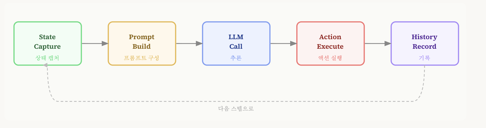
5개 Phase 상세:
| Phase | 담당 | 동작 |
|---|---|---|
| 1. State Capture | BrowserSession.get_state() |
현재 DOM + 스크린샷(선택) 수집 |
| 2. Prompt Build | MessageManager |
시스템 프롬프트 + 태스크 + DOM + 히스토리 요약 조합 |
| 3. LLM Call | LLM | Pydantic AgentOutput 스키마로 structured output 반환 |
| 4. Action Execute | Playwright (CDP) | LLM 출력의 action 필드 실행 |
| 5. History Record | AgentHistory |
다음 스텝을 위한 히스토리 레코드 생성 |
Phase 3에서 LLM이 반환하는 AgentOutput 필드는 네 가지: thinking(내부 추론), evaluation_previous_goal(이전 액션 평가), memory(영속 메모리 노트), action(실행할 액션 목록).
Pydantic 스키마 강제가 중요한 이유: LLM이 자유 형식으로 출력하면 파싱 오류가 잦다. 구조화된 출력을 강제하면 "thinking은 있는데 action이 없는" 불완전 출력이 사라지고, 에이전트 루프가 예측 가능하게 작동한다.
DOM 처리: 10,000+에서 200으로:
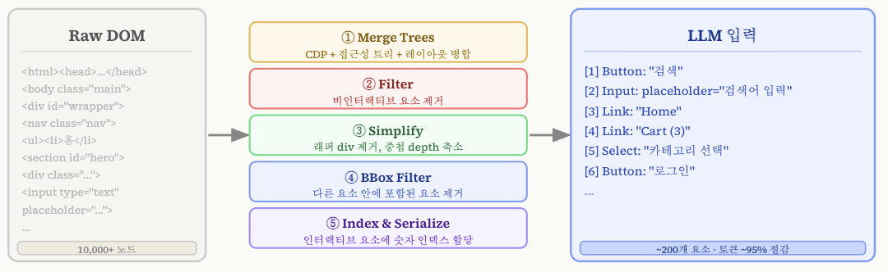
DOM 우선, Vision은 보조. 웹 페이지에서 DOM은 픽셀보다 더 신뢰할 수 있는 "진실"이다. 버튼의 텍스트, 링크의 href, 입력창의 placeholder — 이것들은 DOM에 명확히 있다. 스크린샷은 이 정보를 렌더링한 시각적 표현일 뿐이다. 스크린샷 한 장이 추가될 때마다 이미지 인코더 처리 시간이 스텝당 약 0.8초 붙는다. 이 설계 선택이 속도를 결정한다:
| 에이전트 | 평균 태스크 완료 시간 |
|---|---|
| Browser Use | 68초 |
| Gemini Computer Use | 225초 |
| Claude Sonnet 4.5 | 285초 |
| OpenAI CUM | 330초 |
세 가지 안정화 메커니즘:
# ① ActionLoopDetector — 루프 탈출
# 액션 시퀀스 + 페이지 fingerprint를 모니터링
# 반복 패턴 감지 → 다음 프롬프트에 "nudge" 메시지 주입
if loop_detected(action_history, page_fingerprint):
prompt += "\n[SYSTEM: You seem to be stuck. Try a different approach.]"
# ② Message Compaction — 장기 태스크 토큰 관리
# 15스텝 → 히스토리만 43,000+ 토큰
# 임계값 초과 시 보조 LLM으로 오래된 스텝 요약
if token_count(history) > THRESHOLD:
old_steps = history[:-5]
history = [summarize_llm(old_steps)] + history[-5:]
# → 압축 후 ~12,600 토큰으로 안정화
# ③ KV Cache 인식 구조
# 히스토리(변하지 않는 부분) → 앞에 배치
# 동적 DOM 상태 → 뒤에 배치
# 출력 토큰 최소화 (입력 대비 215배 비쌈)
prompt = system_prompt + task + history_summary + current_dom
# 액션 출력: 스텝당 10~15 토큰만 사용
WebVoyager 벤치마크 결과:
| 에이전트 | 성공률 |
|---|---|
| Browser Use (GPT-4o) | 89.1% |
| OpenAI Operator | 87% |
| Agent-E | 73.2% |
| Anthropic Computer Use | 56% |
단, 동일한 에이전트가 엄격한 Online-Mind2Web에서는 ~30%로 내려간다. WebVoyager의 쉬운 태스크 분포가 수치를 크게 부풀린다.
커스텀 액션 확장:
from browser_use import Agent, Browser, Tools
from langchain_openai import ChatOpenAI
tools = Tools()
@tools.action(description='검색 결과를 파일에 저장')
async def save_result(content: str) -> str:
with open('results.txt', 'a') as f:
f.write(content + '\n')
return f"저장됨: {content[:50]}..."
browser = Browser(keep_alive=True)
agent = Agent(
task="각 경쟁사 제품 가격 조사하여 저장",
llm=ChatOpenAI(model="gpt-4o"),
browser=browser,
tools=tools,
allowed_domains=["competitor1.com", "competitor2.com"],
)
result = await agent.run()
@tools.action 데코레이터로 커스텀 액션을 등록하면 에이전트가 일반 액션처럼 사용할 수 있다. 복잡한 태스크를 플래너 없이 처리하는 "인라인 플래닝" 방식이다.
MCP (Model Context Protocol) 통합:
Browser Use는 MCP 서버를 외부 도구로 연결할 수 있다. MCP가 뭔지부터 짚고 가자.
MCP (Model Context Protocol) 는 Anthropic이 2024년 11월 공개한 오픈 표준 프로토콜이다. 한 줄로 요약하면 "LLM이 외부 도구를 호출하는 방법을 표준화한 인터페이스" 다.
기존에는 에이전트마다 도구 연동 방식이 달랐다. LangChain Tool, OpenAI Function Calling, 각 프레임워크 자체 plugin 시스템 — 전부 제각각이었다. MCP는 이 문제를 해결하기 위해 등장했다. 도구를 제공하는 쪽(MCP Server)과 도구를 사용하는 쪽(MCP Client — LLM 앱)이 따라야 할 공통 규격을 정의한다.
[MCP 구조]
MCP Client (Browser Use Agent)
│
│ 표준화된 JSON-RPC 요청
▼
MCP Server (파일 시스템 / DB / 외부 API / 사내 서비스 등)
│
│ 도구 목록 + 실행 결과 반환
▼
Agent가 결과를 다음 액션 결정에 활용
웹 에이전트에서 MCP가 중요한 이유: 브라우저 조작만으로는 못 하는 일이 있다. 파일을 읽어서 웹폼에 입력한다거나, 크롤링한 데이터를 DB에 바로 저장하거나, 사내 API를 호출해서 결과를 웹에 반영하는 태스크들. 이런 경우 브라우저 액션과 외부 도구 호출을 같은 에이전트 루프 안에서 섞어야 한다.
Browser Use에서 MCP 서버를 연결하면 @tools.action 커스텀 액션처럼 쓸 수 있다:
from browser_use import Agent, Browser
from browser_use.mcp import MCPClient
from langchain_anthropic import ChatAnthropic
# MCP 서버 연결 (파일 시스템 MCP 서버 예시)
mcp_client = MCPClient("npx @modelcontextprotocol/server-filesystem /data")
agent = Agent(
task="reports/ 폴더의 PDF 파일 목록을 읽어서 각 파일명을 회사 인트라넷에 등록해줘",
llm=ChatAnthropic(model="claude-sonnet-4-6"),
browser=Browser(),
mcp_clients=[mcp_client], # MCP 도구가 built-in 액션처럼 추가됨
)
result = await agent.run()
LLM 입장에서는 list_directory(path) MCP 도구나 click_element_by_index(3) 브라우저 액션이나 동일하게 호출 가능한 함수다. 어떤 도구가 브라우저 액션이고 어떤 게 MCP 서버인지 구분할 필요 없이, 하나의 액션 공간 안에서 선택한다.
MCP vs 기존 Tool Use — 핵심 차이
| OpenAI Function Calling / LangChain Tool | MCP | |
|---|---|---|
| 표준화 | 프레임워크별로 다름 | 공개 표준 (누구나 구현 가능) |
| 재사용성 | A 프레임워크 도구를 B에서 못 씀 | MCP 서버 하나를 Claude/GPT/Gemini 모두 연결 가능 |
| 도구 제공 방식 | 코드에 직접 정의 | 독립 서버 프로세스로 실행 |
| 도구 목록 탐색 | 정적 (코드에 하드코딩) | 동적 (tools/list 요청으로 런타임에 조회) |
MCP의 핵심은 도구 서버가 LLM 앱과 독립적으로 존재한다는 점이다. 회사의 DB 조회 도구를 MCP 서버로 한번 만들어두면, Claude Desktop에서도 쓰고, Browser Use에서도 쓰고, 사내 챗봇에서도 쓸 수 있다.
종합: 무엇을 믿고 무엇을 조심해야 하나
벤치마크 선택이 수치를 결정한다. 같은 에이전트가 WebVoyager에서 89%, Online-Mind2Web에서 30%일 수 있다. 논문의 수치를 볼 때 항상 어느 벤치마크인지, 어느 분할인지, 자동 평가인지 인간 평가인지 확인해야 한다.
텍스트 vs 멀티모달의 답은 도메인에 따라 다르다. 웹에서는 DOM이 픽셀보다 더 정확한 "진실"인 경우가 많다. Booking.com처럼 시각적 UI가 핵심인 사이트에서는 멀티모달이 압도적이지만, ArXiv 같이 텍스트 중심인 사이트에서는 차이가 거의 없다.
아키텍처 선택이 성능을 만든다. Agent-E의 계층 분리·DOM 디노이징·언어적 피드백, Browser Use의 인덱스 기반 DOM 압축·ActionLoopDetector·KV Cache 인식 구조 — 이 엔지니어링 디테일들이 모델 자체 능력만큼 중요하다.
현재 위치: 인간 78~89%(벤치마크별)에 비해 최고 에이전트들이 60% 언저리다. 갭의 대부분은 동적이고 복잡한 UI, 여러 탭을 오가는 플로우, 장기 태스크에서의 에러 누적에서 온다.